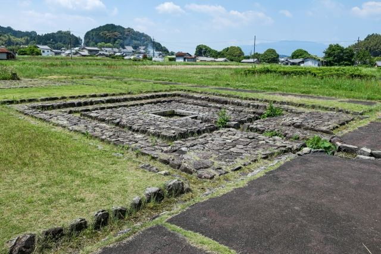
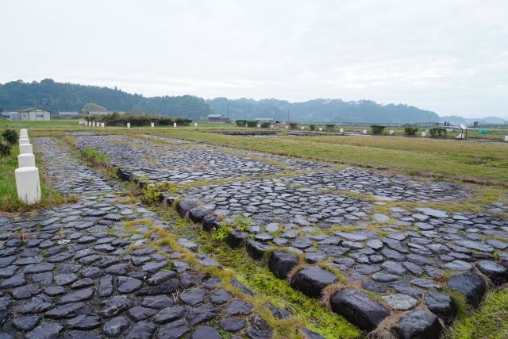

古代日本の政治の中心
飛鳥時代の天皇が政治を行った宮殿跡で、日本の国づくりの舞台となった場所です。

飛鳥宮跡は、飛鳥時代に天皇の宮殿が置かれた場所です。 舒明天皇の飛鳥岡本宮、皇極天皇の飛鳥板蓋宮、斉明天皇の後飛鳥岡本宮、天武・持統天皇の飛鳥浄御原宮など、歴代の宮が営まれた日本古代史を代表する重要な遺跡です。 現在は発掘された柱跡などから、当時の宮殿の姿を知ることができます。
| 見学時間 | 自由見学 |
|---|---|
| 定休日 | なし |
| 料金 | 無料 |
| 所要時間 | 約15〜30分 |
| 駐車場 |
奈良県立万葉文化館駐車場
（徒歩約10分・普通車500円）
飛鳥寺前有料駐車場 （徒歩約10分・普通車500円） |
| アクセス |
近鉄飛鳥駅から徒歩約30分。 明日香周遊バス「岡天理教前」または「万葉文化館」周辺から徒歩で訪れることができます。 |
| 地図 | 地図はこちら |

飛鳥時代の天皇が政治を行った宮殿跡で、日本の国づくりの舞台となった場所です。

発掘調査によって柱跡や建物配置が確認され、古代宮殿の様子を知ることができます。
飛鳥宮跡は、7世紀に天皇の宮が置かれた場所です。 乙巳の変後の政治改革や律令国家形成の時代に、飛鳥は日本の政治の中心となりました。 特に天武天皇・持統天皇の時代には飛鳥浄御原宮が置かれ、日本の歴史に大きな影響を与えた重要な場所です。